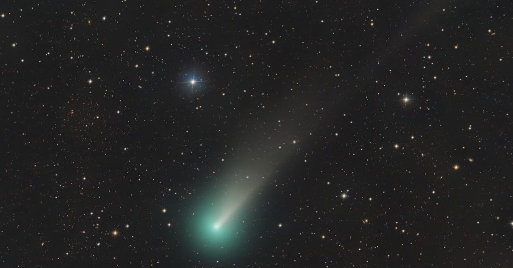

C/2023 A3 (Tsuchinshan-ATLAS) လို့ အမည် ပေးထားတဲ့ ကြယ်တံခွန် အသစ်ဟာ လာမယ့် ၂၀၂၄ ခုနှစ်ထဲမှာ ကမ္ဘာက ကြည့်ရင် ကြယ်တစ်စင်းလောက် တောက်ပလာမှာ ဖြစ်တယ်လို့ ဆိုပါတယ်။ ဒီလို တောက်ပ လာမှာမို့ ကမ္ဘာကနေ တယ်လီစကုပ် မလိုပဲ သာမန် မျက်စေ့နဲ့ မြင်တွေ့နိုင် ကြမှာ ဖြစ်ပါတယ်။
ဒီ ကြယ်တံခွန် သစ်ကို တောင်အာဖရိက နိုင်ငံမှာ ရှိတဲ့ Asteroid Terrestrial-impact Last Alert System (ATLAS) နက္ခတ်တာရာ တယ်လီစကုပ် ကြီးကနေ ပြီးခဲ့တဲ့ ဖေဖော်ဝါရီ ၂၂ ကမှ ရှာဖွေ တွေ့ရှိ ခဲ့ကြတာ ဖြစ်ပါတယ်။
တချိန်ထဲမှာ တရုတ်နိုင်ငံ Purple Mountain Observatory (Tsuchinshan) က နက္ခတ်ပညာရှင် များကလဲ ဒီ ကြယ်တံခွန်ကို ပြီးခဲ့တဲ့ ဇန်နဝါရီ ၉ ရက်နေ့က ရှာဖွေ တွေ့ရှိခဲ့ပါတယ်။ ဒါ့ကြောင့် ဒီ နက္ခတ် မျှော်စင် နှစ်ခုလုံးကို ကြယ်တံခွန်ရဲ့ အမည်မှာ ထည့်သွင်း ဖော်ပြထားတာ ဖြစ်ပါတယ်။
ဒီ ကြယ်တံခွန်ကို ရှာဖွေ တွေ့ရှိ ပြီးတဲ့နောက် နက္ခတ်ပညာရှင် တွေနဲ့ ဝါသနာ ရှင်တွေဟာ သူ့ကို အရင်ရိုက်ကူးခဲ့တဲ့ နက္ခတ်တာရာ ဓါတ်ပုံတွေ ထဲမှာလဲ ပြန်လည် ရှာဖွေ ခဲ့ကြပါတယ်။
အစောဆုံး ဓါတ်ပုံကတော့ အမေရိကန် ပြည်ထောင်စု ကာလီဖိုးနီးယား ပြည်နယ်မှာ ရှိတဲ့ Palomar Observatory က ၂၀၂၂ ခုနှစ် ဒီဇင်ဘာ ၁၂ ရက် နေ့က ရိုက်ကူးထား ခဲ့တဲ့ ဓါတ်ပုံမှာ ပေါ်လွင် နေတာပဲ ဖြစ်ပါတယ်။ (ဒါပေမယ့် ဘယ်သူမှ သတိမပြုမိ ခဲ့တဲ့ အတွက် နောက်လူတွေ ရှာတွေ့သွားတာ ဖြစ်ပါတယ်။)
လက်ရှိ အချိန်မှာ C/2023 A3 ကြယ်တံခွန်ဟာ စနေဂြိုဟ် (Saturn) နဲ့ ကြာသပတေးဂြိုဟ် (Jupiter) ဂြိုဟ်နှစ်စင်းရဲ့ အကြားထဲမှာ ရောက်ရှိနေပြီ ဖြစ်ပါတယ်။ သူဟာ လက်ရှိမှာ တစ်နာရီကို ၁၈၀.၆၁၀ မိုင် (၂၉၀,၆၆၄ ကီလိုမီတာ) အမြန်နှုန်းနဲ့ နေရှိရာကို ဦးတည် ပျံသန်း လာနေပါတယ်။
ဒီ ကြယ်တံခွန်ဟာ ကမ္ဘာနဲ့ အနီးဆုံး နေရာကို လာမယ့်နှစ် ၂၀၂၄ အောက်တိုဘာ ၁၃ မှာ ရောက်ရှိမယ်လို့ ခန့်မှန်း ရပါတယ်။

ဒါပေမယ့် ဒါတွေ အားလုံးဟာ ဒီ ကြယ်တံခွန် တစစီ ကွဲကြေ ထွက်မသွားပဲ တစ်လုံးတခဲတည်း အဖြစ် ဆက်လက် ရှိနေမယ် ဆိုတဲ့ ယူဆချက်ပေါ် အခြေခံပြီး တွက်ချက် ထားတာ ဖြစ်ပါတယ်။
ကြယ်တံခွန် တွေဟာ ရေခဲတွေ၊ ကျောက်တုံးတွေ နဲ့ ဖုန်မှုန့်တွေ ရောထွေးနေတဲ့ အစိုင်အခဲ တစ်လုံးသာ ဖြစ်ပါတယ်။ ဒီတော့ နေနား နီးလာပြီး ရေခဲတွေ အရေ ပျော်တဲ့ အချိန်မှာ တစစီ ကွဲထွက် သွားတာမျိုး မကြာခန ဖြစ်တတ် ပါတယ်။
အကယ်လို့ ကြယ်တံခွန်ဟာ တစစီ ကွဲထွက် မသွားပဲ တစုတစည်းထဲ ဆက်ရှိနေမယ် ဆိုရင်တော့ ၂၀၂၄ ဇွန်လလောက်က စလို့ အပျော်တမ်း နက္ခတ် တယ်လီစကုပ် အသေးတွေနဲ့ စတင် မြင်ကြရမှာ ဖြစ်ပါတယ်။ ဒီ့နောက်မှာတော့ ကမ္ဘာနဲ့ နေအကြား ဖြတ်သွားမှာ ဖြစ်ပါတယ်။ ဒီအချိန်မှာ ကြယ်တံခွန်ဟာ မိုးကုပ်စက်ဝိုင်းနား ကပ်နေမှာမို့ မြင်ကွင်းကနေ ခန ပျောက်ကွယ်နေမှာ ဖြစ်ပါတယ်။
ကြယ်တံခွန် နေနဲ့ ဝေးရာကို ပြန်ထွက်တဲ့ အချိန်မှာတော့ ကောင်းကင် အမြင့် မိုးကုပ်စက်ဝိုင်းနဲ့ ဝေးရာကို ရောက်ရှိ လာမှာမို့ ဒီအချိန်မှာ ကြယ်တံခွန်ကို ပြန်လည် မြင်တွေ့ ကြရမှာ ဖြစ်ပါတယ်။
ကြယ်တံခွန်ကို အကောင်းဆုံး မြင်တွေ့နိုင်မယ့် အချိန်ကတော့ ကမ္ဘာနဲ့ အနီးဆုံးကို ရောက်ရှိလာမယ့် ၂၀၂၄ အောက်တိုဘာ လထဲမှာ ဖြစ်ပါတယ်။ ဒီ အချိန်မှာ ဆိုရင် ကောင်းကင်မှာ အလင်းဆုံး ဆိုတဲ့ ကြယ်တွေနဲ့ အပြိုင် လင်းလက် တောက်ပစွာ တွေ့မြင် ကြရမှာ ဖြစ်ပါတယ်။
အခု လာမယ့် ကြယ်တံခွန်ဟာ ပြီးခဲ့တဲ့ ဇန်နဝါရီက ဖြတ်ပျံသွားတဲ့ အစိမ်းရောင် C/2022 E3 ကြယ်တံခွန်ထက် အများကြီး ပိုမို တောက်ပမှာ ဖြစ်ပါတယ်။
C/2022 E3 ကြယ်တံခွန်စိမ်းရဲ့ တောက်ပမှုဟာ magnitude +4.6 ပဲ ရှိပါတယ်။ ဒီ တောက်ပမှု ပမာဏဟာ ညမှောင်မိုက်နေချိန် မျက်စေ့နဲ့ မြင်ရရုံ အလင်းပဲ ရှိပါတယ်။
၂၀၂၄ မှာ မြင်ရမယ့် ကြယ်တံခွန် အသစ်ကတော့ တောက်ပမှု Magnitude 0.7 ရှိမှာ ဖြစ်ပြီး အတောက်ပဆုံး အချိန်မှာ magnitude -5 (အနှုတ် ၅) ထိတောင် တောက်ပနိုင်တယ်လို့ ဆိုပါတယ်။ ဒီ တောက်ပမှု ပမာဏဟာ ဗီးနပ်စ် ခေါ် သောကြာဂြိုဟ်ရဲ့ တောက်ပမှု ပမာဏ ဖြစ်ပါတယ်။)
(ကြယ်တောက်ပမှု magnitude scale ဟာ ပြောင်းပြန် စကေး ဖြစ်ပါတယ်။ နေရဲ့ တောက်ပမှုက အနှုတ် ၂၇ ဖြစ်ပြီး လပြည့်လ ကတော့ အနှုတ် ၁၃ ဖြစ်ပါတယ်။ အနှုတ် ၅ ဟာ ဗီးနပ်စ် ခေါ် သောကြာဂြိုဟ်ရဲ့ တောက်ပမှုနဲ့ တူညီပြီး အနှုတ် ၁ ကတော့ ကောင်းကင်မှာ အတောက်ပဆုံး ကြယ်ဖြစ်တဲ့ Sirius ကြယ်ရဲ့ တောက်ပမှုနဲ့ တူညီပါတယ်။ လူ့မျက်လုံးဟာ magnitude +6 ထက် ပိုပြီး မမြင်နိုင် တော့ပါဘူး။)
အခုထက် ထိတော့ ဒီ ကြယ်တံခွန်နဲ့ ပါတ်သက်လို့ ဘာမှ သေချာ မသိရ သေးပါဘူး။ သူ့ရဲ့ အရွယ်အစား ဘယ်လောက် ရှိသလဲ၊ ဒြပ်ထု (mass) ဘယ်လောက်လဲ အစ ရှိတာတွေကို မသိရ သေးပါဘူး။
ဒီ အချက်အလက် တွေ မသိတဲ့ အတွက် ဒီ ကြယ်တံခွန် နေနဲ့ နီးလာချိန်မှာ ကွဲထွက်သွားမယ် မသွားဘူး ဆိုတာနဲ့ ပါတ်သက်လို့ ပညာရှင် တွေအနေနဲ့ ဆုံးဖြတ်နိုင်စွမ်း မရှိသေး ပါဘူး။
ဒါ့ကြောင့် C/2023 A3 ဟာ ကမ္ဘာကနေ သာမန် မျက်စေ့နဲ့ ထင်ထင်ရှားရှား မြင်နိုင်ဖို့ မျှော်လင့်ချက် အကောင်းဆုံး ကြယ်တံခွန် တစင်း ဖြစ်ပေမယ့် သူ့ကို မြင်ရ မမြင်ရ ဆိုတာ သူ့ရဲ့ အသက် ရှင်သန်မှု ကံ ပေါ် အများကြီး မူတည်နေတယ် ဆိုတာ တင်ပြ လိုက်ရပါတယ်။
Ref: Bright new comet discovered zooming toward the sun could outshine the stars next year | Live Science